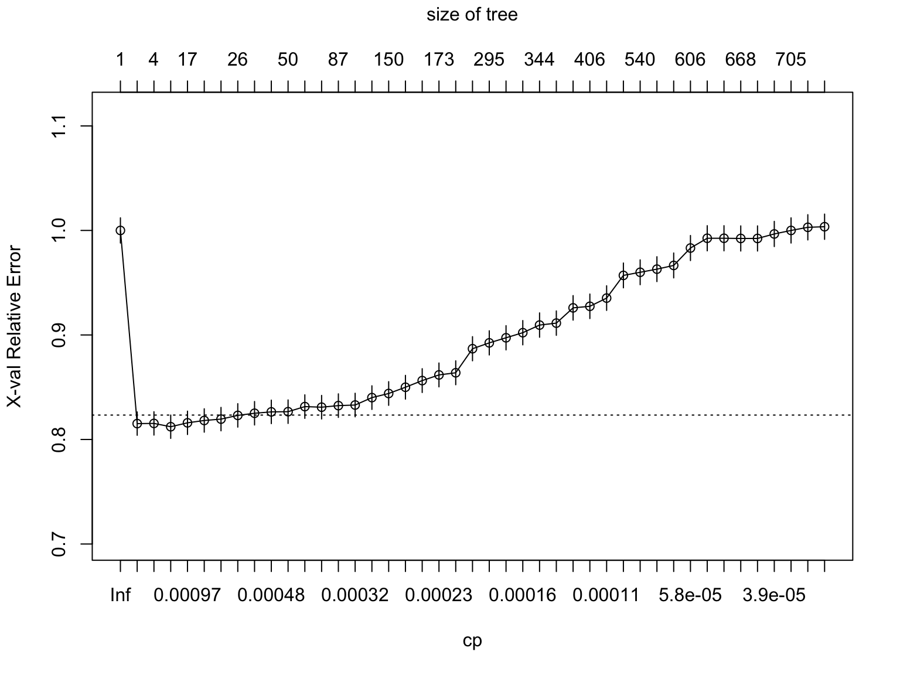
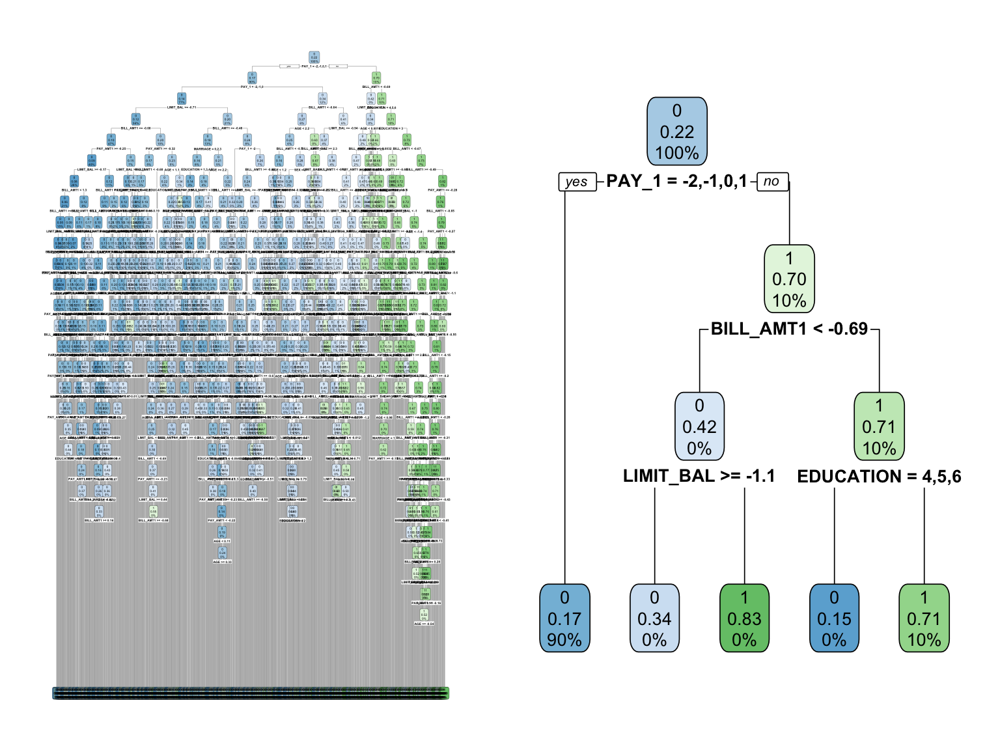
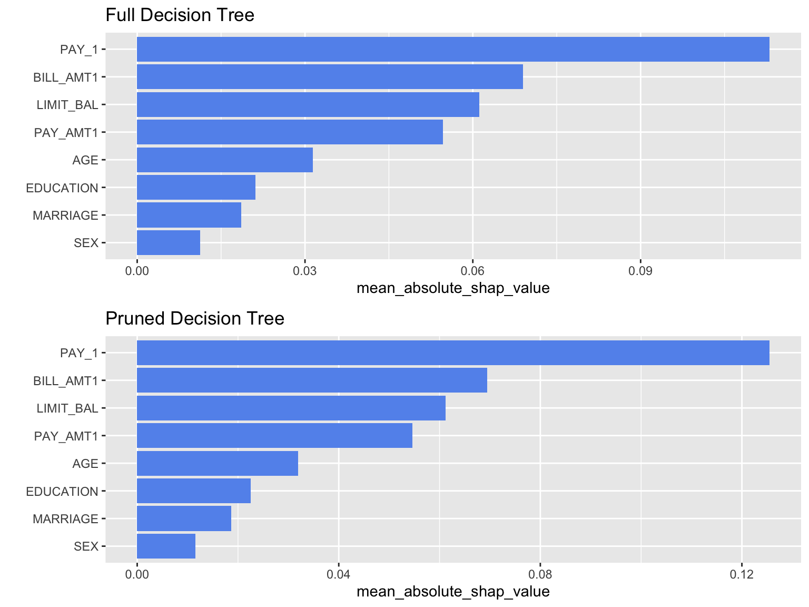
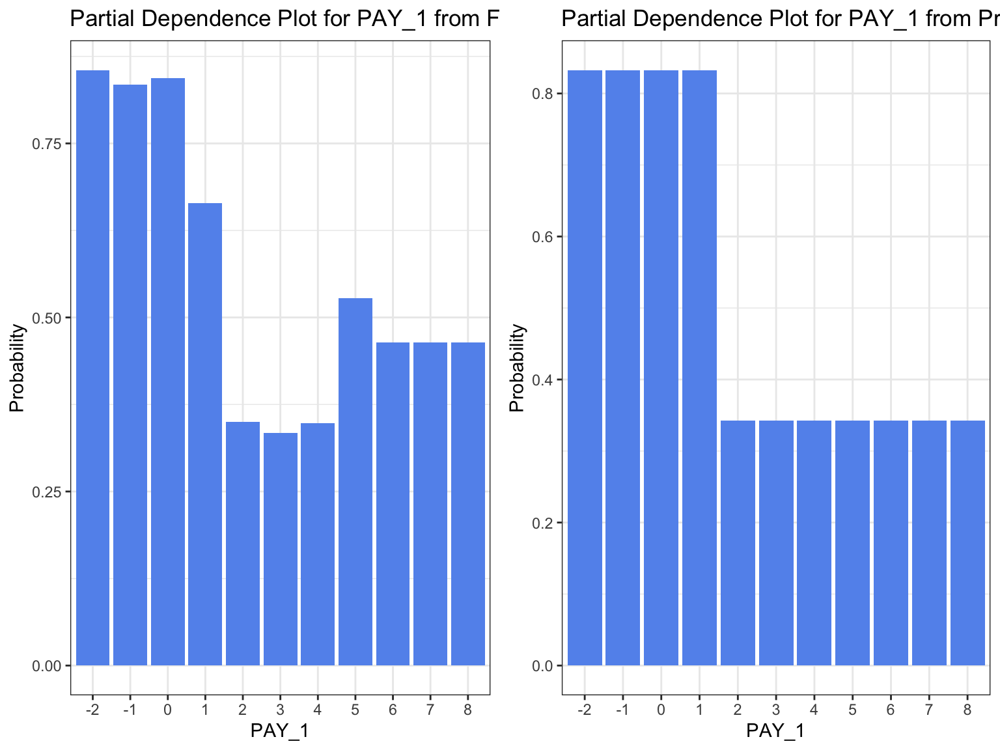
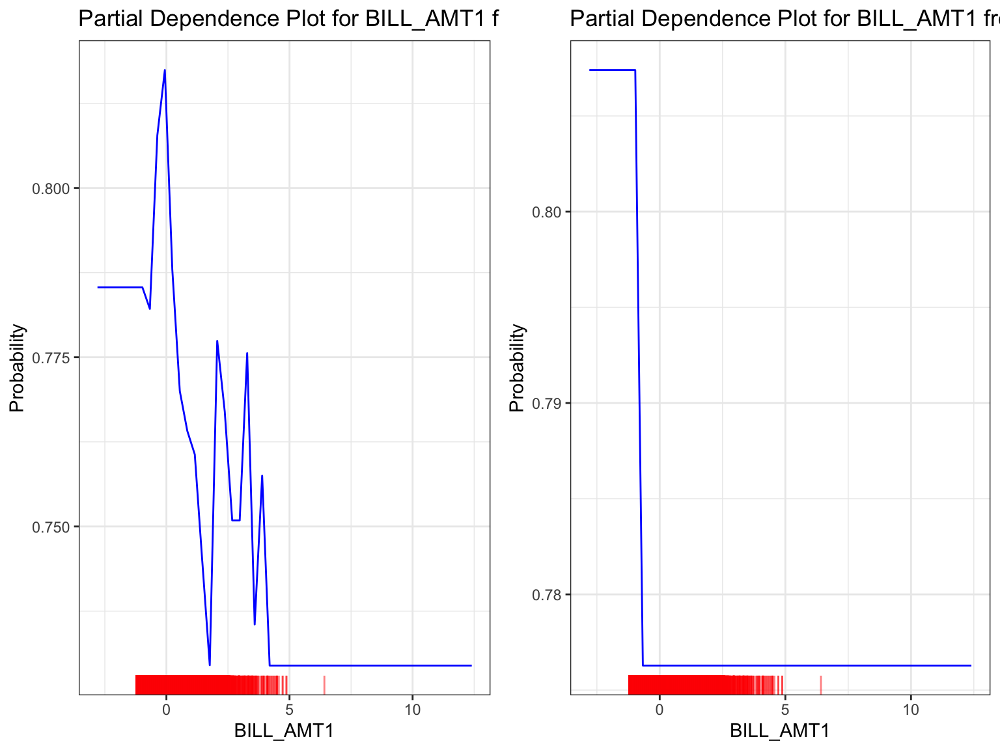
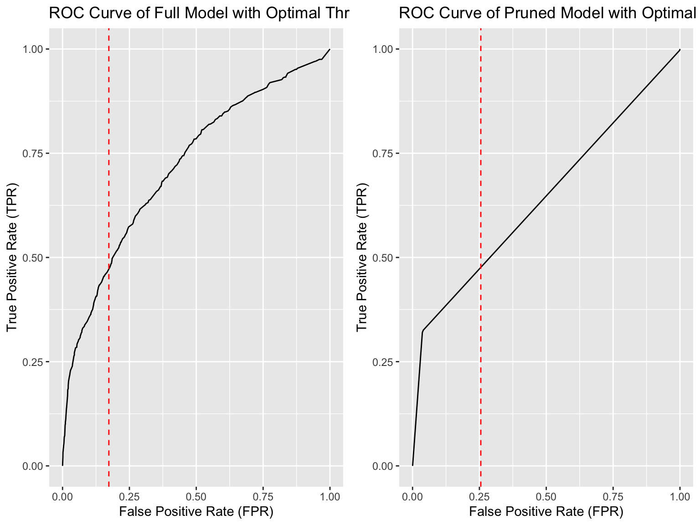

Chapter 4 Decision Tree
4.1 Introduction
Decision Tree is a non-parametric supervised model, which indicates that there is no particular assumptions about the kind of mapping function. we will use CART decision tree, which is a top-down greedy approach to find the partition minimizing the Gini Index, to predict whether or not a person will be a Credit Card defaulter.
4.2 Model Fitting
4.2.1 Complexity Parameter (cp)
 Complexity parameter is a regularization parameter that controls the tree size. Larger cp makes the tree simpler/smaller while smaller cp makes tree more complex. The line chart cp versus cross-validated error rate roughly shows that cross-validated error rate will decrease initially and increase later when cp is increasing. The tree model attains lowest cross-validated error rate when cp = 0.00101.
4.2.2 Decision Tree
The left plot is the full decision tree model and the right is the pruned decision tree model.

Given the two plot above, we can find that the pruning with cp = 0.00101 can significantly reduce the decision tree model complexity (From depth 28 to depth 3). As the full decision tree is too complex to read and interpret, we would pay more attention on the pruned tree model. In each node of the the pruned tree model, we can find the major label of the data in the node which is on the top of the node, the gini index which represent the measure of impurity and is at the middle of the node, and the percentage which represents the proportion of training instances that belong to each class at that node and is at the bottom of node. The conditioanl statement in the middle of branch is the criteria of splitting.
4.3 Model Interpreation
4.3.1 Shapley Values

The Shapley value is the average contribution of a feature value to the prediction in different coalitions. The plot above shows the mean absolute SHAP values of the decision tree model we built, which represent the each variable’s impact to prediction.
Both of the full tree model and pruned tree model have same feature importance distribution and the most importance feature is PAY_1 and the second is BILL_AMT1.
However, by comparing the magnitude of mean absolute shap value between the full tree model and pruned tree model, we can find the pruned decision tree model treat the PAY_1 more important than full decision tree.
4.3.2 Partial Dependence Plots (PDP)
4.3.2.1 Partial Dependence Plots of variable PAY_1

From the Partial Dependence Plot of PAY_1 from the full tree model and the pruned tree model, we can see that the pruning model’s distribution of level contribution of PAY_1 is less volatile than that of the full model. This information suggests that clients who have a history of less delay in their payments (lower PAY_1 level) are less likely to default on their credit card payments. The cut off of the level impact toward prediction at PAY_1 = 2 matches both models partition criteria at PAY_1.
However, there is a paradoxical phenomenon where the full decision tree model’s contribution distribution of PAY_1 levels is completely opposite to the logistic regression model’s contribution distribution of PAY_1 levels. This phenomenon could be explained by the exploratory data analysis of PAY_1, where the frequency distribution of PAY_1 levels among default clients is similar to the full decision tree model’s distribution of level contribution of PAY_1.
4.3.2.2 Partial Dependence Plots of variable BILL_AMT1

Similar to the PAY_1 variable, the distribution of level contribution of BILL_AMT1 in the pruned model is less volatile than that of the full model. In the partial dependence plot for BILL_AMT1 from the full model, we can observe that the contribution falls in a fluctuating manner as the bill statement amount from the previous month increases.
4.4 Model Evaluation

## Accuracy of Full Model: 0.6995## Accuracy of Pruned Model: 0.8235The two plots above represent the Receiver Operating Characteristic (ROC) curves of the full model and the pruned model. The red line vertical to the X-axis represents the optimal threshold evaluated by the Youden index. The Area Under the Curve (AUC), which measures the area under the ROC curve, is a metric used to evaluate the performance of a binary classification model. Given the AUC of the full model is 0.7176, the AUC of the pruned model is 0.642, and the full model achieves the same level of TPR as the pruned model with a lower FPR, we can conclude that the full tree model is better if we focus on predicting true default clients (sensitivity). However, we can barely interpret the information given from the visualization of the full model, which can be seen as a trade-off between interpretability and model performance.